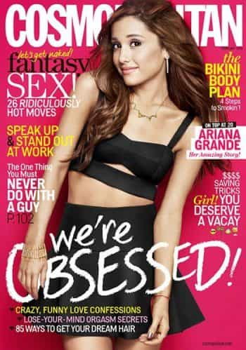

Jared is a middle-aged guy full of old-man wisdom. He's best described as a gentlemen scholar and a man among men. You can read his writing at his site: Legends of Men


The manosphere has been writing about women’s unrestrained sexual nature for years. If you include PUA material there’s more than a decade’s worth of writing. But that’s nothing compared to Cosmopolitan magazine.
Men have written about this subject for several reasons: to be better at seducing women, to avoid relationships with loose women, and to acknowledge women’s role in the cultural decline. But Cosmo writes about women’s sexual nature as both fantasy and prescription. Unfortunately for all, that fantasy has become a reality.

During WWII, while men were at war, women took on their roles in the workplace. This was to ensure that America was manufacturing all the equipment it would need to win at war as well as keep society operating. When men came home from war and went back to work most women reclaimed their roles as wives, mothers, and matrons. But not all women. Some women stayed in the workforce and more women joined them each year. As they worked with men in a man’s world they wanted to be treated like men and “succeed” on men’s terms.
In the 1960’s, Helen Gurley Brown became the editor of Cosmo. She saw the writing on the wall and transformed the magazine so that it could take advantage of the changing times. She presented the magazine in a way that acknowledged women’s work fantasies (climbing the corporate ladder, sitting at the board with the men) and their personal fantasies (guilt-free promiscuity).
By associating sex with work Brown eliminated women’s guilty feelings about sex. In doing so she further equated women in the workforce to men in the workforce by shifting reader’s perspectives on feminine roles in society. If a woman works like a man, she should be guilt free about her promiscuity like a man. What working girl wouldn’t want to read that?
Cosmopolitan began writing about fictional and abstract Cosmo girls. A Cosmo girl is both a fantasy to the reader (because such a woman only exists happily in fiction) and a prescription (Cosmo advises women how to be Cosmo girls). They are best represented in pop culture in two places.
The first is the movie Pretty Woman. It’s a romantic story about a street hooker, very new to hooking, who takes a rich, handsome millionaire as her John. She works him so well that he hires her to give him the girlfriend treatment for a while. In that while, he falls in love with her and she with him. It’s a story of a working girl using sex to get ahead. She doesn’t feel bad about being a hooker. In a strange way, it makes her stronger or sexier or more empowered. In the end, she gets everything she wants.
The second example is Sex and the City. This show was about four working girls being promiscuous and discovering their own sexuality in the process. They learn something about themselves by boning various dudes. That self-discovery is empowering. In the meantime, they work, spend lavishly on clothes and eating out, take vacations, and have some of those various men fall in love with them.
Initially, Cosmo’s readers differed from its content. Whereas articles might be about upper-middle-class single-and-loving-it types, the readers were quite different. Most of Cosmo’s audience was married women with jobs, not careers. They were clerical or service workers.
Cosmo first and foremost validated these women’s fantasies. Nowadays in the manosphere, we learn that women’s sexuality, without societal constraints, is hypergamous. Cosmo figured this out in the 60’s and sold women their own fantasies while encouraging them to pursue those fantasies.
What are these poor girls learning?
Helen Gurley Brown figured out how to sell sex to women while they waited in the checkout line at the grocery store. She did this by identifying what women want to be sexually; a “free-spirited sexual adventuress wheeling and dealing in a laissez-faire world of sexual market relations.” The female fantasy is to be able to use her sexuality in market transactions for gain. This is why some articles advise women on how to be a better sexual object and some a better sexual subject.
It teaches them how to be better sexual objects by advising them on ways to be hotter (workouts advise, make-up advise, clothing advise, how to pleasure a man advise, etc…). This also helps them sell ads for related products. The goal just below the surface of the text is for a woman to be able to make men lust for her so badly that she can take what she wants from them.
As a sexual subject, Cosmo tells women that they have freedom of sexual agency. They choose how many guys they want to bone, when they want to bone, how the boning will proceed, and what they expect in return for sex.
Keep in mind, the primary audience of Cosmo until recently was primarily working, married women.
More than anything, Cosmo sent the message to working women that to get ahead at work the ends justify the means. And that the best tool women have to achieve that end is their sexuality. Cosmo offered women the fantasy that they were justified in their promiscuity whether for business or for pleasure. It’s no wonder Cosmo became so popular and prophetic.
(For reference and further reading check out The “Cosmopolitan” Ideology and the Management of Desire by Kathryn McMahon originally published in The Journal of Sex Research in August of 1990.)
For more from Jared Trueheart on the roles of men and women I literature and film check out his writing at Legends of Men.
Read More: Why Do Women Have Rape Fantasies?